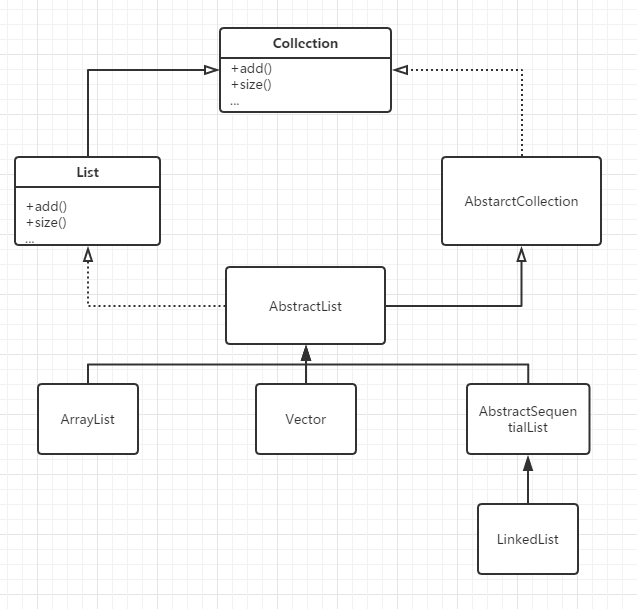

List是一个有序的集合，和set不同的是，List允许存储项的值为空，也允许存储相等值的存储项。List主要分为3类，ArrayList， LinkedList和Vector。
为了进一步清晰List的结构，大家可以看一下下图。它其实是继承于Collection接口，除了Collection通用的方法以外，扩展了部分只属于List的方法。 
ArrayList<E>类
ArrayList
2.在list中的任何地方插入元素
3.遍历所有元素
那么，我们就来看一下，如何使用List<E>的一些方法。
如何使用List<E>
1.
boolean add(E obj);
//在list的末尾添加obj，总是返回true，如果元素不是E类型的，抛出ClassCastException
2.
int size();
//返回list中的元素数量
3.
E get(int index);
//返回在index的元素
4.
E set(int index, E element);
//把在index位置的元素换成element，返回原先在index的元素，如果特定元素不是E类型的，会抛出ClassCastException
5.
void add(int index,E element);
//在index处加入element，把index处及其之后的元素都会向后移动1个位置。List的大小增加1。
6.
E remove(int index)
//删除在index位置的元素，返回原来index位置的元素。在index位置后的元素会向前移动1个位置。List的大小减一。
TIPS:如果index<0||index>=size()，那么此时操作会抛出IndexOutOfBoundException。add操作除外，对它来说在末尾添加元素是可以的，此时如果index<0||index>size()会抛出exception。
讲完了List<E>的方法，我们再来讲讲主角ArrayList<E>的方法：
如果我们想创建一个空list，我们可以使用以下方法：
ArrayList<E> name = new ArrayList<E>();
TIPS: 在末尾对ArrayList进行操作很有效率，因为它的长度是可变的。如果在中部操作ArrayList会造成操作元素后的元素移位。
小练习
1.Consider the following code segment,applied to list,an ArrayList of Integer values.
int len = list.size();
for (int i = 0; i < len; i++) {
list.add(i + 1, new Integer(i));
Object x = list.set(i, new Integer(i + 2));
}
If list is initially 6 1 8, what will it be following execution of the code segment? (A) 2 3 4 2 1 8
(B) 2 3 4 6 2 2 0 1 8
(C) 2 3 4 0 1 2
(D) 2 3 4 6 1 8
(E) 2 3 3 2
下面的内容要按一下才会显示：